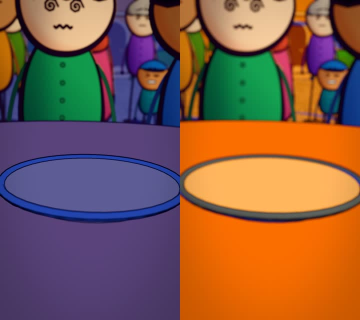
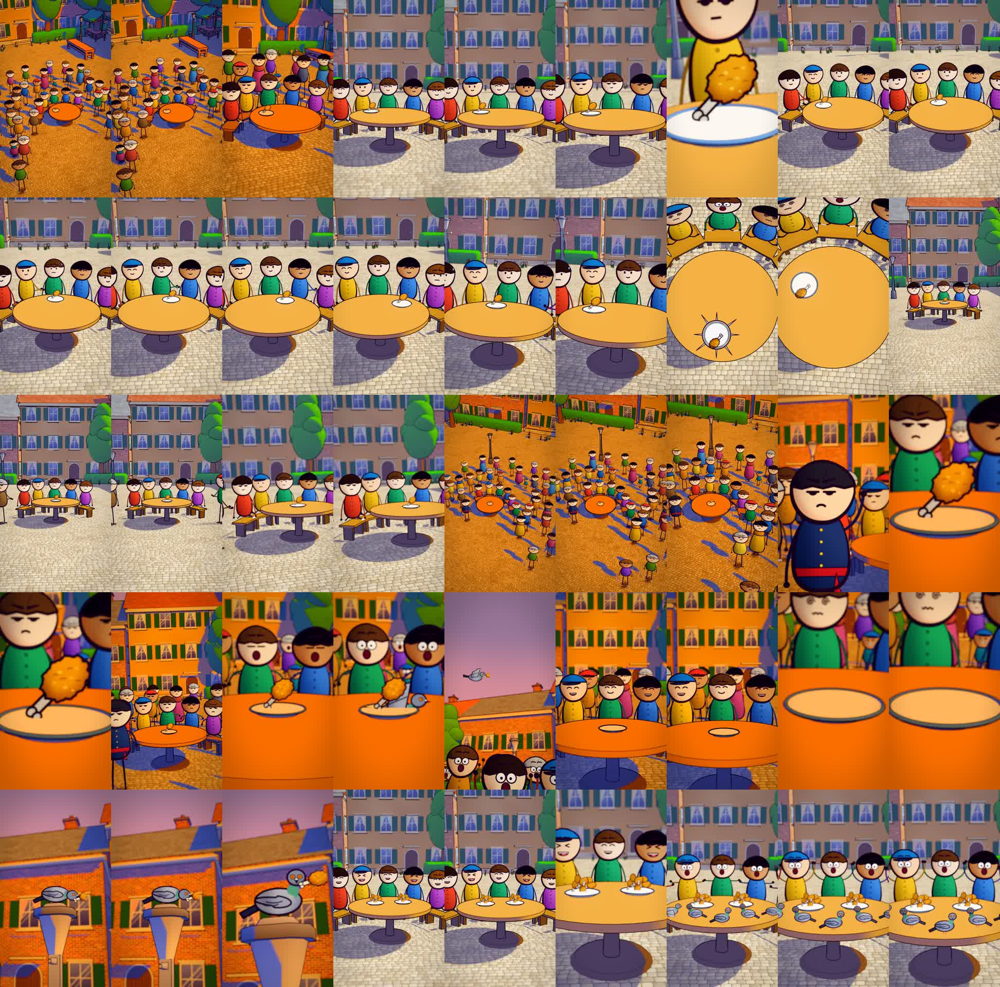
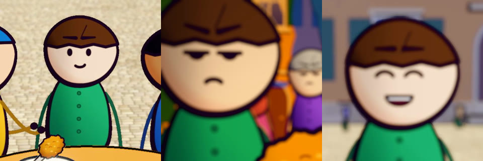

claude-animated-shorts는 클로드 코드에 넣어 쓰는 무료 스킬(MIT)이에요. 이야기 한 줄을 주면 클로드가 대본을 쓰고, 목소리를 붙이고, 3D 동네와 2D 캐릭터·카메라·음악·효과음을 전부 코드로 만들어 내 PC에서 세로 만화 쇼츠로 렌더해요. 영상 생성 AI는 쓰지 않아요. 아래 '처음부터 끝까지 예시'는 저희가 직접 돌려 본 결과예요(윈도우 노트북, 그래픽 카드 없음).
저장소를 받아서 폴더째 ~/.claude/skills/cartoon-3d-short/ 에 넣어요(윈도우는 C:\Users\내이름\.claude\skills\cartoon-3d-short). '복사해서 쓰기'의 두 줄을 터미널에 그대로 치면 돼요. 프로젝트 폴더 안 .claude/skills/cartoon-3d-short 에 넣어도 그 폴더에서만 쓸 수 있어요(저희는 이렇게 했어요).
영상 하나당 빈 폴더 하나를 만들고 그 안에서 클로드 코드를 켜요. Remotion 프로젝트(remotion·@remotion/three·three·@react-three/fiber·postprocessing)는 클로드가 그 폴더에 직접 만들어 줘요. 3D 소품(나무·덤불·가로등·노점)은 저장소에 파일이 없어서, 클로드가 Kenney 무료(CC0) 키트를 받아 public 폴더에 넣어요 — 저희 예시에서도 클로드가 알아서 받았어요.
'cartoon short 스킬로 만들어 줘: [이야기 한 줄]' + 아래 조건 몇 줄. 이야기는 '누가 → 무엇이 점점 커지고 → 마지막에 뒤집히는' 한 줄이 잘 나와요(예: 닭다리 양보 → 동네 회의 → 비둘기). 스킬 기본 규칙은 영어 나레이션·2K 출력이라, 한국어로 만들려면 '언어는 한국어'를 꼭 적어요. 해상도(1080x1920), 길이(35~45초), 목소리 만드는 법, 임시 폴더 위치도 같이 적으면 덜 헤매요.
스킬은 목소리 파일(voice.wav)과 낱말마다 시각(words.json)이 있어야 장면을 말에 맞춰요. 내 목소리를 녹음해도 되고 TTS로 만들어도 돼요. 저희는 돈 안 드는 윈도우 내장 한국어 TTS(Heami)로 만들라고 했고, 클로드가 낱말 시각까지 뽑았어요.
주제·사실 확인 → 대본(SCRIPT.md) → 목소리 → 장면 계획(story.ts: 컷·카메라) → 3D 동네(build.ts·world.ts)·캐릭터(toon.ts·cast.ts) → 정지 화면 몇 장 렌더해서 확인·고치기 → 음악·효과음 합성(코드로 만든 곡이라 외부 음원 없음) → 최종 렌더 → 소리 합치기 → 프레임 검사(검은 화면·멈춤 확인). 저희 예시에선 정지 화면 확인을 네 번 하며 조명·닭다리 크기·비둘기 날개를 스스로 고쳤어요.

렌더는 three.js 화면을 한 프레임씩 찍어요. 저희 노트북(내장 GPU, --gl=angle)에선 1080x1920 45초(1,350프레임)에 약 40분 걸렸어요. 2K로 뽑으면 더 걸려요. 렌더마다 임시 폴더에 remotion-webpack-bundle-* 폴더가 쌓이고 저절로 안 지워져요(SKILL.md 주의). TEMP·TMP·REMOTION_TMP를 큰 드라이브 폴더로 잡고, 다 끝나면 그 폴더를 지워요.
완성 파일은 작업 폴더 out/ 에 남아요(저희는 out/final.mp4). 마음에 안 드는 곳은 말로 고쳐요: '마지막 컷 비둘기를 더 크게', '해 질 녘 장면 채도를 낮춰 줘'. 고친 장면만 정지 화면으로 먼저 보고, 괜찮으면 다시 렌더해요. 화면 타이밍을 바꾸면 소리도 다시 맞춰야 해요(SKILL.md).
쓰기 좋은 때: 짧은 이야기·상식·역사 사건을 만화 쇼츠로 만들고 싶을 때, 캐릭터 얼굴이 컷마다 똑같아야 할 때(코드로 그린 그림이라 안 바뀌어요), 영상 생성 요금 없이 만들고 싶을 때. 안 맞는 때: 10분 안에 결과가 필요할 때, 클로드 코드 사용량을 아껴야 할 때, 디스크 여유가 몇 GB뿐일 때, 사람처럼 사실적인 영상이 필요할 때.
11/6 저희 노트북(램 16GB, 그래픽 카드 없음)에서 Claude Code로 돌렸어요. 요청은 '복사해서 쓰기'의 이야기 한 줄 + 조건 블록 그대로, 한 번만 보냈고 다시 시킨 건 0번. → 클로드가 대본을 씀(마지막 닭다리를 친구 다섯이 양보 → 동네 주민 마흔 명 회의 → 투표 직전 비둘기가 물고 감 → '비둘기는 먹이 준 사람을 알아보고 기억한다'(학술지 Animal Cognition 2011 연구)는 사실로 반전: 다음 주엔 비둘기가 다섯 마리) → 윈도우 TTS로 목소리 44초 → 캐릭터·광장·카메라 코드 → 정지 화면 확인 4번 → 음악·효과음 → 최종 렌더 40분 → 45초 완성. 모두 약 1시간 44분.


터미널에서(두 줄)
git clone https://github.com/mromidev/claude-animated-shorts.git ~/.claude/skills/cartoon-3d-short rm -rf ~/.claude/skills/cartoon-3d-short/.git
PowerShell에서
git clone https://github.com/mromidev/claude-animated-shorts.git "$env:USERPROFILE\.claude\skills\cartoon-3d-short"
빈 작업 폴더의 클로드 코드에
cartoon short 스킬로 만들어 줘: 마지막 남은 치킨 한 조각을 친구 다섯 명이 서로 양보하다가 온 동네 회의까지 커지는데, 결국 비둘기가 물고 날아가는 이야기.
D:/remotion-tmp는 내 PC의 큰 드라이브 폴더로 바꿔요
[이 PC 조건 — 스킬의 사용자 규칙보다 우선] - 작업 폴더는 지금 폴더만 쓴다. Remotion 프로젝트도 여기에 새로 만든다. 전역 설치(npm -g, pip 전역) 금지 — 파이썬 패키지는 이 폴더 안 venv에, npm은 이 폴더 node_modules에. - 임시 폴더는 D:/remotion-tmp (TEMP·TMP·REMOTION_TMP 모두). - 렌더는 --gl=angle 먼저, 안 되면 swangle. 최종은 1080x1920(--scale 1), 2K 안 함. - 언어는 한국어(대본·목소리). 화면에 글자·자막 없음은 스킬 규칙대로. - 목소리: 윈도우 내장 한국어 TTS(System.Speech, 'Microsoft Heami Desktop')로 voice.wav를 만들고, 단어 시각 words.json은 SpeakProgress 이벤트로 뽑는다. 유료 서비스·API 키 쓰지 않는다. - 3D 소품은 Kenney CC0 키트(kenney.nl)만. 실존 인물·브랜드·남의 캐릭터 금지. references/ 폴더 그림은 보는 용도만. - 길이 35~45초. 검증 에이전트는 많아야 한 번, 전체 3시간 안에 끝내는 것을 목표로. - 끝나면 out/final.mp4(소리 섞은 것)와 DONE.txt(걸린 단계·시간 요약)를 남긴다.
클로드 코드 켜기 전에
export TEMP='D:/remotion-tmp' TMP='D:/remotion-tmp' REMOTION_TMP='D:/remotion-tmp'
렌더가 하나도 안 돌 때만
rm -rf D:/remotion-tmp/remotion-webpack-bundle-* D:/remotion-tmp/puppeteer_dev_chrome_profile-*
도움이 되셨다면
@ai.antenna.kr
에서 바로 쓰는 AI 활용법을 계속 올립니다.